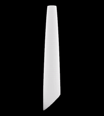
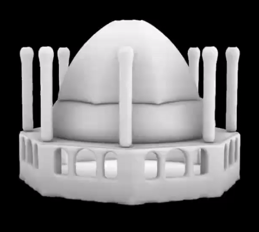

In recent years, along with the completion
of some architectural projects with organic and intricate forms, a new question to
architects has been raised: Can architects use “morphological evolution” method to
generate architectural forms inspired from the same way nature does? Fortunately, the
topic in the structural field, named topology optimisationcreates the possibility of this
strategy.
For group project each of us optimized part of Gaudi's church.
▾


▾
The strategy aims to find the solution with the highest structural performance under
certain material limitations by removing or adding material elements step by step.
we was trained to develop our skills of architectural design
through the application of topological optimisation (BESO) software Ameba. The
concept of topological optimisation and the inspiration of natural morphological
evolution will be run through architectural form-finding.
My individual project was optimisation of a haritage(Soltanieh dome)